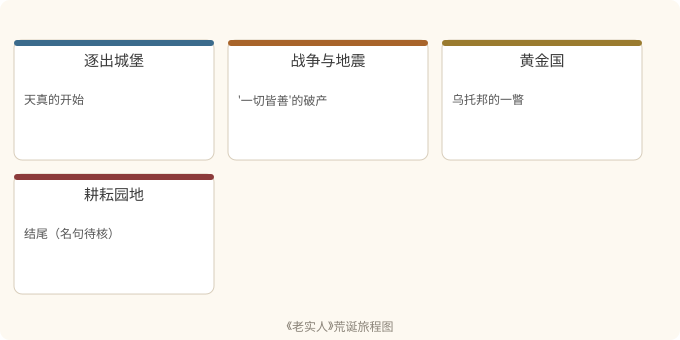

老实人
一、基本信息
| 作者 | 伏尔泰 |
|---|---|
| 成书/出版 | 1759年出版（Britannica：the satirical novel Candide (1759)） Voltaire — Encyclopaedia Britannica（百科全书） |
| 国别/地区 | 法国 |
| 时代 | 近代 · 启蒙时代 |
| 体裁 | 哲理小说 |
| 语言 | 法语 |

《老实人》荒诞旅程图（主题·结构图）
二、创作背景
Britannica：伏尔泰为'central figure of the Enlightenment'，《老实人》为其讽刺小说（B239）。
讽刺目标：'乐观主义'（莱布尼茨式'一切皆善'说——通说待核；Britannica 该页未载目标）。
三、内容脉络
憨第德（Candide）被逐出城堡：从战场、地震、宗教裁判到黄金国——一路荒诞（通说）。
庞格罗斯师的'一切皆善'不断被现实打脸（通说待核）。
结尾：'必须耕耘我们的园地'（名句通说待核——il faut cultiver notre jardin）。
四、主要人物表
| 人物 | 身份 | 说明 |
|---|---|---|
| 憨第德（Candide） | 青年 | 天真的旅人 |
| 庞格罗斯 | 哲学教师 | 乐观主义化身（通说） |
| 居内贡 | 城堡小姐 | 爱慕对象（通说） |
五、主题与艺术特点
- 对盲目乐观主义的清算（通说待核）。
- 灾难的目录：战争、地震、宗教裁判（通说）。
- 退出玄谈、耕耘园地（名句待核）。
六、影响与评论
- Britannica：伏尔泰'attacked church authority, championed reason and religious tolerance, and influenced the French and American revolutions'（B239）——《老实人》为其通俗化载体。
Voltaire — Encyclopaedia Britannica（百科全书） - 哲理小说文体的典范（通说）。
Voltaire — Encyclopaedia Britannica（百科全书）
七、阅读建议
难点
- 章回式的快节奏讽刺——辨明史实影射。
- 1755里斯本地震等事件背景（通说）。
- 傅雷译本（人民文学出版社，通说待核）。
- 法文原版（公有领域）。
对照《格列佛游记》：两种启蒙讽刺。
八、待核实
- '耕耘园地'结尾原文核对。
- 莱布尼茨乐观主义目标说出处待核。
- 1759年匿名初版（日内瓦说）待核。
本页主要来源
伏尔泰的其他收录作品：老实人